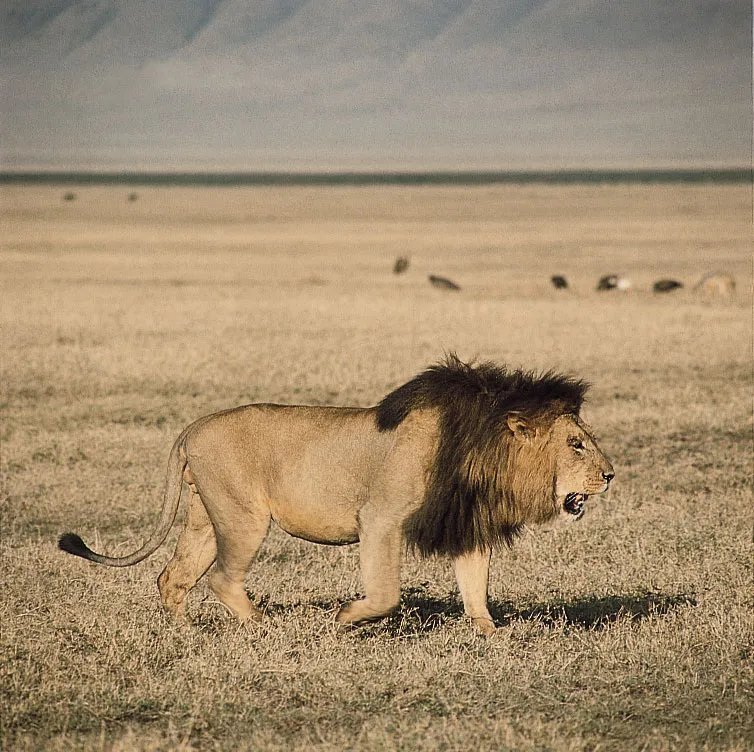
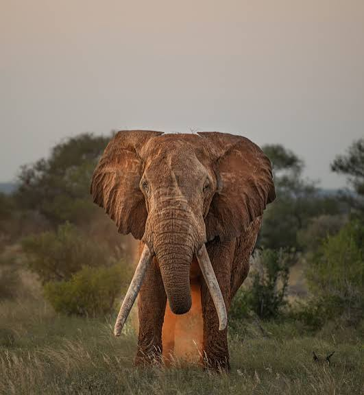
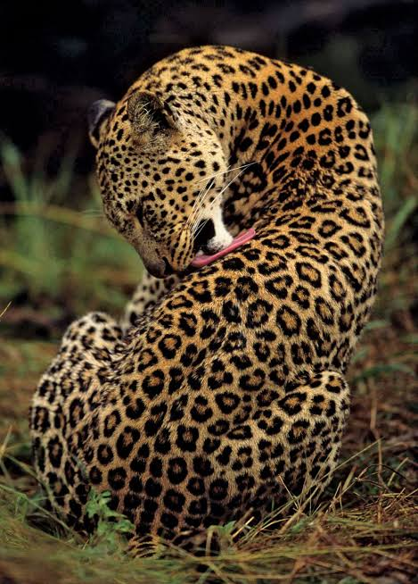
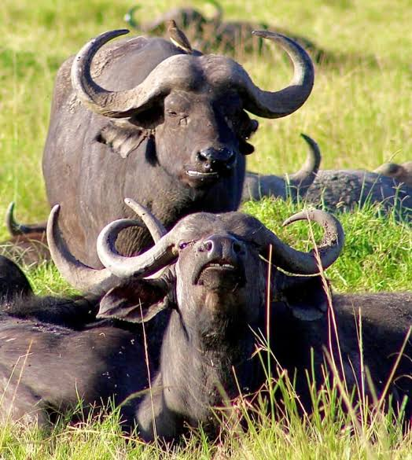
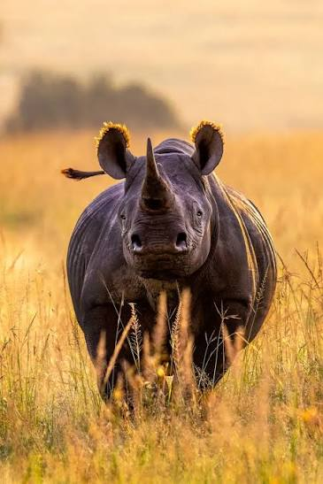

The lion is a large cat of the genus Panthera native to Africa

The elephant is the largest land animal on Earth, known for its intelligence and social behavior.

The leopard is a large cat native to Africa, known for its distinctive spotted coat.

The African buffalo is a large herbivore found in sub-Saharan Africa, known for its strength and unpredictable nature.

The rhinoceros is a large, thick-skinned herbivore native to Africa and Asia, known for its horned snout.
